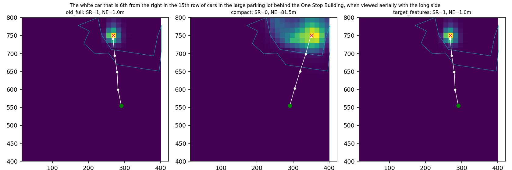
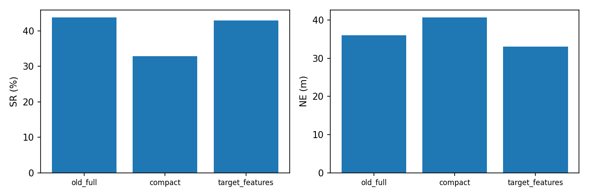
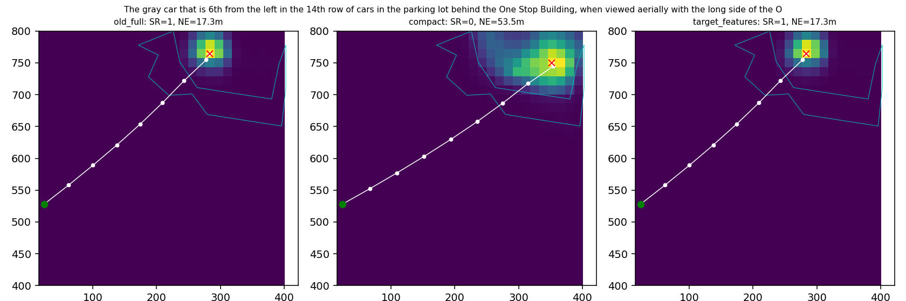
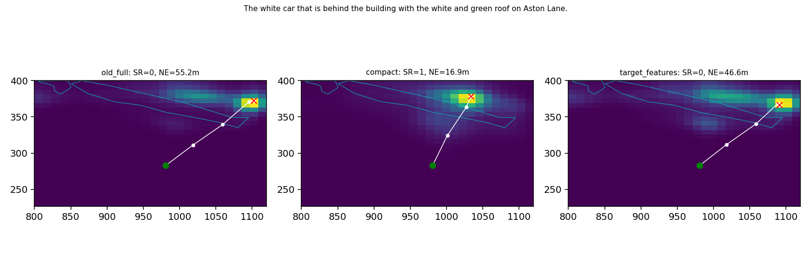
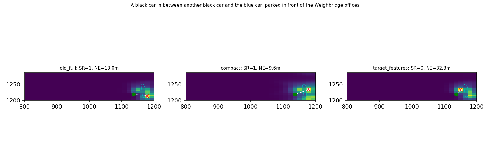
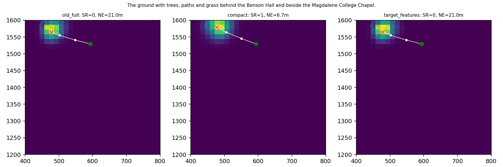

Episode index 97
The white car that is 6th from the right in the 15th row of cars in the large parking lot behind the One Stop Building, when viewed aerially with the long side of the One Stop Building to the right.

不是全量SR；RGB关闭、目标描述完整保留。白线为真实闭环轨迹，青色为公开Polygon。
中文报告
The white car that is 6th from the right in the 15th row of cars in the large parking lot behind the One Stop Building, when viewed aerially with the long side of the One Stop Building to the right.

A tiny white car in the third lane of the One Stop parking lot away from the Food Warehouse. that is sandwiched between two tiny blue cars and back to back with a larger black car.
The gray car that is 6th from the left in the 14th row of cars in the parking lot behind the One Stop Building, when viewed aerially with the long side of the One Stop building to the right.

The white car that is behind the building with the white and green roof on Aston Lane.

A black car in between another black car and the blue car, parked in front of the Weighbridge offices

The ground with trees, paths and grass behind the Benson Hall and beside the Magdalene College Chapel.
